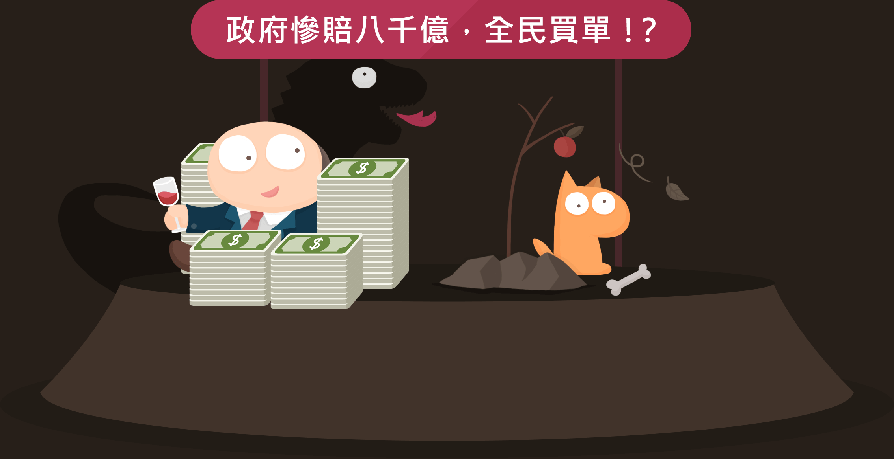

《憲法》述明，礦屬於國家公共資源，歸全民所有，但在台灣，採礦卻是「免環評」、「免告知」、「免同意」的特許行業，不用說一般民眾，連距離礦區幾百公尺的居民都不知道山林實際的面貌。新政府上台後，好不容易立法院與環保署都有共識要補破網，但修法八字都還沒一撇，在花蓮坐擁最大礦區的亞洲水泥新城山礦場，就通過礦權展延，就算之後成功修法，未來 20 年，亞泥仍不受新法拘束。
依據 2016 年的資料顯示，現行 185 個礦場、20 種不同的礦石採取中，有 76% 都是供交水泥使用的大理石礦場。水泥業是以內銷為主，撐起了過去台灣經濟蓬勃發展的大建設時代，但到了水泥消耗量只剩下最高點的一半不到的今天，卻仍有高達 2 成的外銷率，被環團批評是「賤賣國土」。山林破壞不可逆，我們是否還需要這麼多的水泥？又或者，要用什麼樣的代價換取？
水泥外銷率曾高達五成，至今仍有兩成
2008 年 ~ 2015 年期間

長期低價外銷，內外銷價格失衡
水泥內外銷價格表
雖然全台灣礦場數量歷年在減少
2006年~2015年期間
礦場主要集中在宜蘭跟花蓮
104年底開工礦場分佈圖
權利金只佔採礦收益的 6%
礦屬於「全民所有」
但業者付給政府的權利金與產品所得相差 16 倍
無實質管制效力的總量管制
礦務局透過「大理石礦開採總量限制」逐年降低開採量，但實際上，因應消費市場需求減少，開採量每年都達不到管制量，每年卻還是訂下高於去年開採量的管制量。

是時候做出選擇
此處放置一段引言，但現在我是假文。グローバル化を背景に、感染症が拡大するスピードも加速している。2009年春にメキシコで流行が始まった新型インフルエンザは、隣の米国でも発症後わずか２カ月で約110カ国に拡大。ジカ熱も2015年に流行が本格化してから１年余りで世界に広がった。
藍色藥丸
憑什麼要賠錢？馬英九還我牛
紅色藥丸
為了環保，硬吞空心菜

,
,
,